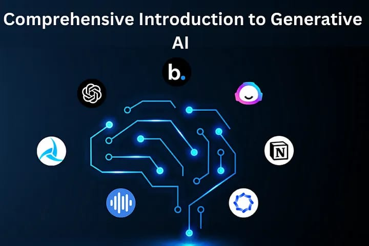

ART
One of the most interesting areas that have captured the attention of researchers and enthusiasts recently is generative artificial intelligence (AI). Generative AI enables machines to create original content, such as images, text, and even music, fostering creativity and pushing the boundaries of what machines can achieve. This comprehensive blog post will serve as a primer on generative AI, exploring its definition, underlying mechanisms, various model types, real-world applications, and the challenges it presents.

GO HOME